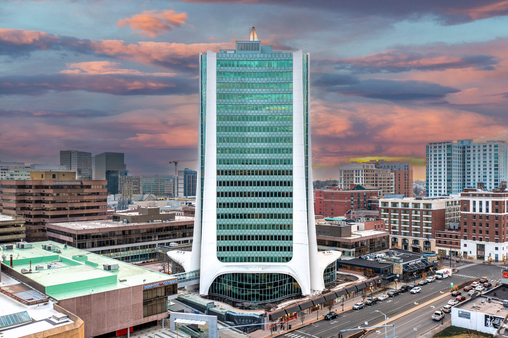

Stamford homeowners, renters, and real estate buyers should take note: the city has officially adopted new building regulations requiring solar panels or green roofs on large new developments. This change, effective July 20, 2026, marks a significant step toward sustainability in the city’s growth strategy and will shape how new housing and commercial spaces are designed for years to come.

What's happening
On July 6, 2026, the Stamford Zoning Board unanimously approved updated zoning rules that mandate new construction with roofs of at least 5,000 square feet—or residential developments with 10 or more units—to include either solar panels or vegetated green roofs [6]. The requirement applies to all new large-scale projects, including commercial and multi-unit residential buildings, and is part of a broader sustainability package designed to improve energy efficiency and environmental performance [2].
The new rules also require developers to meet minimum energy-efficiency standards through a formal "Stamford Sustainability Scorecard," which must now result in a passing grade to secure building approval—a change that gives the scorecard real regulatory weight [6]. Projects involving affordable housing and nonprofit organizations are granted more flexibility in meeting these energy standards, with a minimum "C" rating required instead of stricter benchmarks [6].
Additionally, the updated code strengthens tree protection rules: developers must plant and maintain street trees, post a $1,000 bond per tree for three growing seasons, and pay $600 per inch of tree diameter if replacement is not possible [6]. The new regulations were adopted under Application 226-08 and officially published on July 9, 2026, with full implementation beginning July 20, 2026 [6].
The city’s long-term vision
These changes are aligned with Stamford’s 2035 Comprehensive Plan, which prioritizes green infrastructure, climate resilience, and sustainable urban development [6]. The Zoning Board described the move as “an excellent step forward for Stamford, in terms of environmental improvements” [1], emphasizing that the rules are not final but are expected to evolve based on feedback from developers, architects, and residents, as well as advancements in green technology [2].
While the rules apply only to new construction, they signal a clear direction: future development in Stamford will be expected to contribute positively to the city’s environmental footprint. The inclusion of green roofs—defined as vegetated surfaces that reduce stormwater runoff and urban heat island effects—reflects a shift toward treating rooftops as functional infrastructure, not just architectural features [2].
What this means for Stamford buyers & renters
As a local real estate agent in Stamford, I see this shift as a pivotal moment for the city’s housing market. These new rules will influence the design, cost, and availability of new units in the coming years—especially in high-demand areas like downtown and near transit hubs. For buyers and renters, this means that new buildings will likely be more energy-efficient, with lower long-term utility costs. While upfront construction costs may rise slightly due to solar and green roof requirements, the savings on energy and maintenance could be meaningful over time.
For renters, especially those in new developments, this could translate into more consistent indoor temperatures, reduced noise from rooftop equipment, and better air quality—particularly in dense urban zones. Green roofs help mitigate the heat island effect, which can make downtown areas feel significantly cooler during summer months. That’s not just a comfort benefit; it can impact comfort and even health during heat waves.
From a market perspective, this move may accelerate the trend toward “green-certified” buildings, even if not required. As buyers and renters become more environmentally conscious, properties with proven sustainability features—like solar panels or green roofs—could gain a competitive edge in rental pricing and resale value. Even if not all new projects are identical, the presence of these features will become a standard expectation in new construction.
That said, the impact on affordability remains a key consideration. While the rules allow flexibility for affordable housing developers, the added costs of compliance could still influence pricing. We may see a slight premium in new units, especially in high-demand areas with strong transit access and walkability. However, the long-term savings and environmental benefits may help offset this.
Ultimately, these rules reinforce Stamford’s position as a forward-thinking city in the region. For buyers and renters, it means investing in homes that are not only modern and well-designed but also built to last in a changing climate. As the city continues to grow, these regulations ensure that development doesn’t come at the expense of sustainability.
Sources
- [https://www.stamfordadvocate.com/local/](https://www.stamfordadvocate.com/local/)
- [https://www.stamfordadvocate.com/news/article/stamford-solar-panels-green-roofs-building-rules-22335579.php](https://www.stamfordadvocate.com/news/article/stamford-solar-panels-green-roofs-building-rules-22335579.php)
- [https://roofmagazine.net/connecticut-city-will-require-solar-panels-or-green-roofs-on-large-buildings/](https://roofmagazine.net/connecticut-city-will-require-solar-panels-or-green-roofs-on-large-buildings/)
- [https://library.municode.com/CT/Stamford](https://library.municode.com/CT/Stamford)
- [https://www.pressreader.com/usa/stamford-advocate-sunday/20260614/281517937816645](https://www.pressreader.com/usa/stamford-advocate-sunday/20260614/281517937816645)
- [https://www.newsbreak.com/stamford-ct-daily-brief-373178716/4761313302340-stamford-zoning-board-adopts-new-sustainability-tree-and-roof-rules](https://www.newsbreak.com/stamford-ct-daily-brief-373178716/4761313302340-stamford-zoning-board-adopts-new-sustainability-tree-and-roof-rules)
Common questions
What buildings must install solar panels or green roofs in Stamford?
New construction with roofs over 5,000 square feet or 10+ residential units must include solar panels or vegetated green roofs under Stamford’s updated zoning rules.
How does this affect Stamford renters and buyers?
The rules may lead to higher upfront costs for new units, but energy savings and climate resilience could offset this over time. Green roofs also reduce urban heat, improving comfort in dense areas.
What is the Stamford Sustainability Scorecard?
It’s a mandatory evaluation for new projects that must meet minimum energy-efficiency standards to receive building approval, now carrying real regulatory weight.
Related on Downtown Stamford
More local context: the Stamford housing market, a block-by-block look at Stamford neighborhoods, and what it's like to live here. Questions about how this affects your move? Ask me directly.